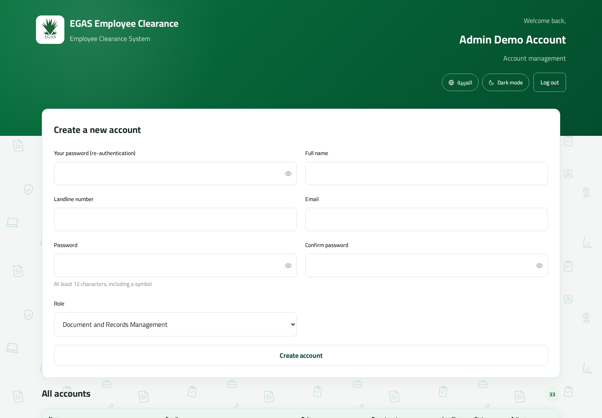

Account Administration · Version 2.0
Administrator Manual
Creating and maintaining Document & Records Management and department-reviewer accounts.
Creating and maintaining Document & Records Management and department-reviewer accounts.
An Admin manages operational user accounts. Admins do not process or view employee clearance requests and cannot manage Admin or Super Admin accounts.
| 1. Sign in and password security | Access |
| 2. Create operational accounts | Daily task |
| 3. Reset or delete accounts | Maintenance |
| 4. Troubleshooting and checklist | Reference |
Login screen. The demo-account picker is a development feature and may be absent in production.
If the Super Admin reset your password, the temporary password only permits you to open Set new password. Choose at least 12 characters containing a symbol. There is no skip option.
Creating, resetting, and deleting accounts requires your current password again. Enter your own password—not the affected user’s.
Use the help link on the login page to obtain Super Admin contact details. Password recovery is assisted; the system does not email reset links.

Admin dashboard: account creation form and accounts within the Admin’s management boundary.
| Role | Purpose | Required assignment |
|---|---|---|
| Document and Records Management | Creates, monitors, reviews, approves, and—after completion—deletes clearance requests. | No department |
| Department Reviewer | Reviews and signs for one department. | Department; IT also requires one checklist item |
| Admin can | Admin cannot |
|---|---|
| Create/list/reset/delete operational accounts | Manage Admin or Super Admin accounts |
| Assign reviewer departments and free IT items | See, sign, approve, or delete clearance requests |
| Provide assisted password recovery | Reset or delete the Admin’s own account |
| Problem | Likely cause | Action |
|---|---|---|
| Account creation rejected | Missing field, invalid role/department, weak password, duplicate email, or claimed IT item. | Read the message and correct the specific field. |
| Current password rejected | The confirmation password is not the signed-in Admin’s current password. | Re-enter your own current password. |
| Admin account is not listed | Admins cannot manage peer Admin accounts. | Contact the Super Admin. |
| User sees only “Set new password” | The account has a temporary password. | Create a permanent password meeting the displayed policy. |
| IT item is unavailable | Another account owns it. | Review/reset/delete the correct owner only after approval. |